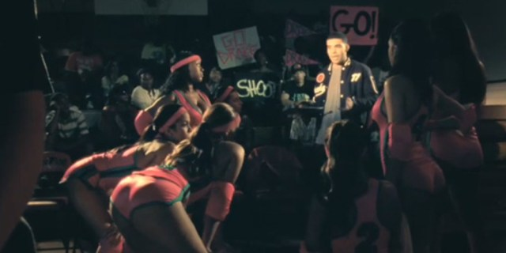
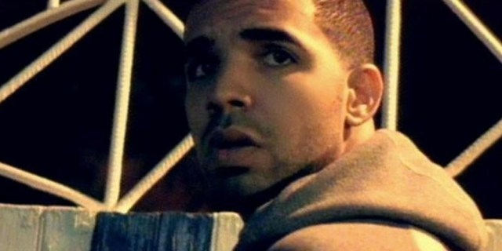
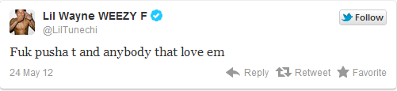
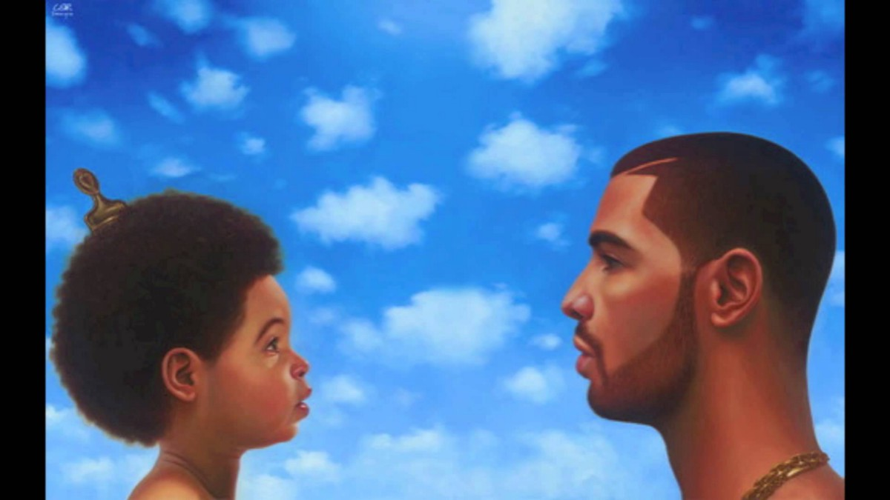
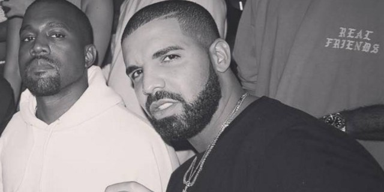
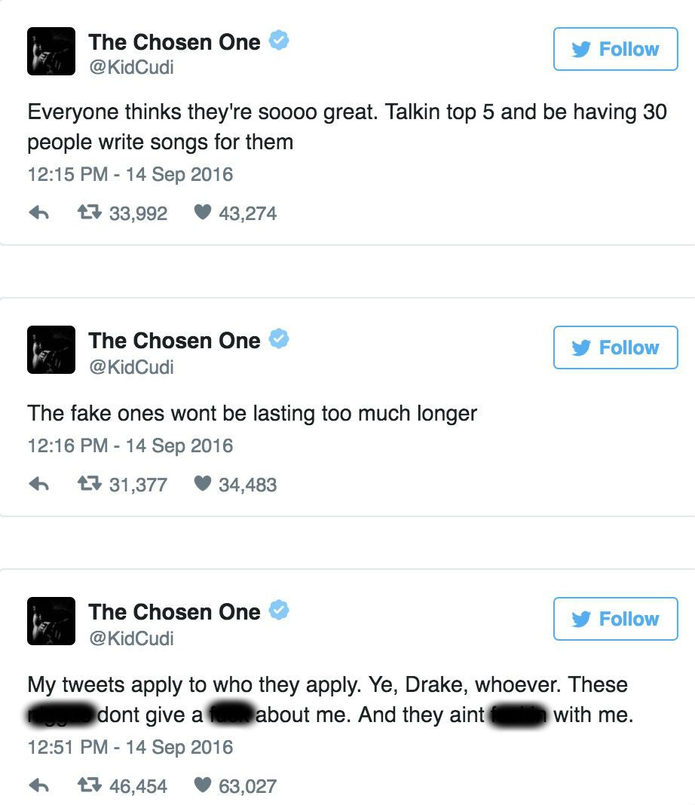
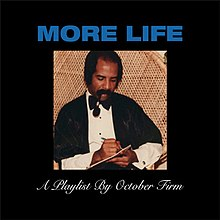
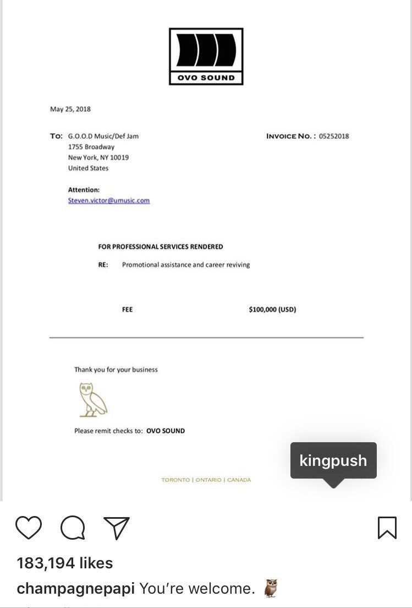
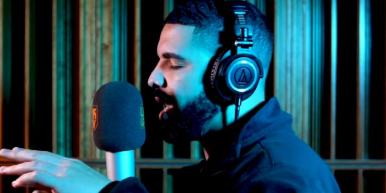

Drake vs Kanye West and Pusha T
Idols become your Rivals *Explicit Language Used*
2006: Clipse vs. Lil Wayne
We'll start with sme background to the beef. In 2006, Lil Wayne was the cover star of Vibe magazine’s April issue, clad in the popular streetwear brand BAPE, which at the time grew in popularity thanks to Pharrell Williams and was worn a lot by Clipse. The Virginia-bred duo wasn’t too fond of Wayne wearing the brand and released “Mr. Me Too” -- produced by Pharrell -- in which No Malice rapped, “Wanna know the time? Better clock us/ N---as bite the style from the shoes to the watches.” That same year, Wayne sat down for an interview with Complex and addressed Clipse’s subliminal diss. “You talking to the best. Talk to me like you’re talking to the best. I don’t see no fuckin’ Clipse. Come on man,” Wayne said. “Weezy, man. They had to do a song with us to get hot, B. 'What Happened to That Boy?' C’mon, B.” Wayne even called out Pharrell, saying, “Who the fuck is Pharrell? Do you really respect him? That n---a wore BAPEs and y’all thought he was weird. I wore it and y’all thought it was hot.”
2009: Kanye West Meets Drake
And this is where it all began. Long before his debut album would hit the shelves, Drake would meet with Kanye West for the first time in Hawaii, as the Canadian recollected to MTV News at the time. Their meeting was brief, but they made sure to mention that they wanted to make music together. In the coming months, the two would make public displays of their appreciation for one another–Drake by telling MTV News how Kanye was “the most influential person as a far as a musician that [he’d] ever had in [his] life,” and Kanye by praising Drake’s songwriting skills on his KanyeUniverseCity.com blog–and by the end of the year, we got our first two Drake/Kanye collaborations: “Digital Girl Remix” (with Jamie Foxx and The-Dream), and “Forever” (with Eminem and Lil Wayne). Later that same year, Drake and Kanye would have their biggest collaboration to date, but Kanye wouldn’t be making a trip to the booth for this one. Instead, Ye went behind the camera when he directed the music video for the standout hit on So Far Gone, “Best I Ever Had.” What followed was what many deemed to be a glorified peep show showcasing women in skimpy outfits. Since this was a far cry from the sentimental, female empowerment that the lyrics suggested, the video was slammed by fans and critics. Rumors circulated that Drake wasn’t happy with the final product, and Drake would tell MTV News, “I guess one thing I didn’t consider is what the song personally means to a lot of women. To those women, I apologize.”
2010: Kanye Helps Drake/Beef Starting to Form
While Kanye’s directorial fumble disappointed Drake, it wasn’t enough to strain their relationship. In fact, Mr. West would lend a big helping hand on Drizzy’s debut album, Thank Me Later when he co-wrote and co-produced “Find Your Love;” a song originally written for Rihanna. The beat was given to Drake at the suggestion of his mentor, No I.D.. The song proved to be a smash hit, but interestingly enough, Kanye would casually mention in a 2013 interview with Peter Rosenberg that he “was fine with writing Drake’s ‘Find Your Love,’ until he got too big.” It’s also worth mentioning that Ye also produced “Show Me a Good Time” for the album, as well as a leftover track called “You Know, You Know.” “All of the Lights,” the fourth single on Kanye West’s Beautiful Dark Twisted Fantasy, was officially released on November 25th, 2010, but months prior during the summer, the song had leaked onto the internet. What had leaked was an early draft of the song created back when it was still titled “Ghetto University,” and included an unfinished verse from Drake. As a result of the leak, Drake’s verse was removed from the official version. Drake later told Shade45 that he was “completely OK” with the change. However, to make it up to him, Kanye put Drake on the remix to the song, which hit the internet on March 2011, and also featured vocals from Lil Wayne and Big Sean. Apart from another leak, the remix was never officially released.
2011: Pusha And Kanye Begin dissing
2011 saw two big releases for both men. Drake would drop his sophomore album Take Care in November, while Kanye would drop Watch the Throne with Jay-Z the summer prior. It was in this time period where a friendly competition between Kanye and Drake started to heat up. In an interview with Tim Westwood, when asked about a possible collab tape between himself and Lil Wayne, Drake threw some jabs at Jay and Ye’s project by saying “I heard two other guys are coming out with an album, too…I don’t know where they got that idea from.” In the coming months, tracks like “I’m On One”–where Drake has lines like “I just feel like the throne is for the taking. Watch me take it”–start to sound like subliminals. Some years later, at OVO Fest 2013, Kanye would claim that the only reason why him and Jay made Watch the Throne was because it was the only way to compete with Drake. During his late 2011 promo run in anticipation for Take Care’s release, Drake revealed that his friendly competition with Kanye West was far deeper than many of us would have suspected at the time. He told The Source that as a young man listening to his music, Kanye West was someone who Drake “related to the most” at a time when he was trying to figure out who he was. Drake would add “He was an artist, in every sense, from his cover art to his music. Now, I would say, he is a really great competitor…and friend, at the same time. My goal is to surpass everything he’s accomplished. I don’t want to be as good as Kanye. I want to be better.”
Pusha made sure there was no room for confusion about who he was dissing on "Exodus 23:1," as he rapped, "Contract all fucked up/ I guess that means you all fucked up/ You signed to one n---a that signed to another n---a/ That's signed to three n---as, now that's bad luck." The shot was likely directed at Drake again, who was signed to Lil Wayne's Young Money imprint, a subsidiary of Cash Money Records, which operates under Universal Music Group. Wayne continued to make it clear he's no fan of Pusha, tweeting, "Fuk pusha t and anybody that love em."
2013: Drake disses Pusha While It's all Love with Kanye
Since signing to Young Money in 2009, Drake's loyalty to Lil Wayne has never wavered. On "Tuscan Leather," Drizzy dished out subliminal messages to anyone (ahem, Pusha) who spoke badly about his YMCMB boss. "I'm just as famous as my mentor/ But that's still the boss, don't get sent for/ Get hype on tracks and jump in front of a bullet you wasn't meant for," he rapped at one point, and followed up with the line, "Bench players talkin' like starters, I hate it."It appears as though Kanye and Drake spent the remainder of 2011 and much of 2012 apart. They spent the time apart to cool off from recent tensions, and it culminated in Kanye’s surprise appearance at OVO Fest 2013, which Drake told MTV News was “the most important moment in [his] career to date.” Afterwards, he would go more in depth about him and West’s falling out to Billboard. He said, “Me and Ye just fell into this thing where we hadn’t actually talked to each other in so long that all this stuff got built up. Sometimes you just have to find the opportunity to tell someone that you really like and respect them. After that, everything can move on. Hopefully, we give the world what they want, because I know they want it.” Later that year, they would both have guest vocals on Big Sean’s “Blessings.”
2015/2016: Drake and Kanye Tease Album But The Sneak Dissing Re-Starts
In an interview with The Breakfast Club morning show, Kanye claimed that he and Drake spoke about doing a collab album called Wolves, but it never came to pass. Instead, their conversation about collaborations inspired Kanye to produce the “Wolves” track for The Life of Pablo. He would add in the interview that he hoped that by mentioning this abandoned project, he could speak the album into existence one day. A year later, on the final night of Drake’s OVO Fest 2016, Kanye would make a surprise appearance, but stop the performance to once again tease a Drake/Kanye collab album, asking fans if they were ready for it. We’re not sure if Drake and Kanye were actually working on an album at the time or if Kanye was trying to speak it into existence again, but in light of recent events, it is looking more and more likely that we may never see this collab project come to fruition.
In anticipation for Views coming out later that year, Drake kicked off 2016 by releasing a single called “Summer Sixteen.” Drizzy dropped a few bars towards his then-rival Meek Mill, but perhaps more alarming were the random shots at Kanye when Drake made sure to let us all know that he had “a bigger pool that Ye / and look man, Ye’s pool is nice, mine’s just bigger is what I’m saying.” Kanye would respond simply on Big Boy’s Neighborhood show a month later by saying “I have three pools.” Then, the following May, Drake would clarify his comments on Zane Lowe’s Beats 1 that he meant no ill will in the lyric. It “was really just, like, some friendly neighbor bars” towards his fellow Calabasas resident. All in good fun. For now.
At this point, in more recent years, Kanye was known to often help Drake on projects, usually producing or writing tracks for him. But during the production on his seventh album, the teacher asked the student for some help this time around. On The Life of Pablo, Drake is credited as a writer on “30 Hours,” “No More Parties in L.A.,” “Facts (Charlie Heat Version),” and “Father Stretch My Hands.” And as we mentioned earlier, “Wolves” was inspired by a conversation between Kanye and Drake, so October’s Very Own helped KanYeezy in more ways than one. This wouldn’t be the last time that Father would stretch his hands out to Drake for assistance. On April 5th, just weeks before Drake’s third album hits the market, Drake released a single called “Pop Style” featuring Kanye and Jay-Z. Although, it isn’t much of a collaborative track. Jay contributes only two verses. Regardless, the song remains a success, but oddly enough, when Views dropped on April 29th, the Jay and Kanye verses were gone from the album. Drake expressed his disappointment over the whole situation a year later in an interview with DJ Semtex: “I’m not really sure the details between how that conversation was miscommunicated or what they were going through at that time, or what anybody felt towards me or whatever it was, I’m not really sure, but next thing I knew it just became a bit of an issue. And you know from there I don’t waste too much time, so I just was like, alright, cool, I’ll finish it, I can rap as good as anybody else, so I’ll just go finish this song and put forth my own version [because] I don’t really like…you know, no one can dangle anything over my head in this business, I don’t play that. So it just needed to be done and I did it myself and yeah, both versions exist, so when Kanye comes out to do it at the shows it goes crazy. I know he was really upset [because] at that time we were working together pretty heavy and he really wanted to be on the record but you know….”
Toward the end of Pusha's hookless attack on "H.G.T.V Freestyle," the rapper diverted his attention to his longtime rival, Drake, and questioned the Toronto artist's pen game. "It's too far gone when the realest ain't real/ I walk amongst the clouds so your ceilings ain't real/ These n---as Call of Duty 'cause their killings ain't real/ With a questionable pen so the feelin' ain't real," Pusha said, possibly referencing Drake's 2009 mixtape So Far Gone and reigniting claims that Drake uses a ghostwriter for his raps. November 19th, 2016 had to be a confusing night for anyone who attended Kanye West’s concert in Sacramento. Before storming offstage after performing just three songs, Ye rambled on about everything from being a Trump supporter, begging Jay-Z and Mark Zuckerberg to call him, and implying that Drake and DJ Khaled had somehow “set up” their latest record “For Free” to get played over and over again on the radio. He made sure to say he still had love for Drake and Khaled, but he wanted to hear more artists other than them on the radio, like Frank Ocean and Kid Cudi, the latter of whom Kanye cited as “the greatest of all of us.”
.jpg)
2017: Things get complicated
In an interview with DJ Semtex, Drake took the time to address the rant that Kanye spewed months prior, and had this to say: “I’m not really sure what [Kanye’s] referring to half the time, [because] in the same breath, I went from being…like working on a project with him, to him sorta publicly shitting on me and DJ Khaled for being on the radio too much. But yeah, I’m not really sure. Everybody’s got their own thing going on. Again, me, when I hear that, I just distance myself from it, you know, alright, if that’s what it is, I don’t really even understand the point you’re trying to make, but whatever it is that you’re going through, I accept it. I don’t respect it at all. You know, [because] I feel like me and Khaled are just good people. I’m not sure why we’re the target of your choice that you made that night. And yeah, I accept what you’re going through, and I just go and continue working on my own thing. You know, the more and more this progresses, the more and more I just feel like keeping to myself.”
Drake questions Pusha's street credibility on "Two Birds, One Stone" In 2017, Drake and Pusha's beef heated up some more. When Drizzy unleashed his "playlist" More Life, Drake called out Pusha on "Two Birds, One Stone" and claimed the rapper is living a false life. "But really it's you with all the drug dealer stories/ That's gotta stop, though/ You made a couple chops and now you think you Chapo," Drake said. He continued: "You middle man in this shit, boy, you was never them guys/ I can tell, 'cause I look most of you dead in your eyes/ And you'll be tryna sell that story for the rest of your lives." The other "bird" Drake addressed in the song was Kid Cudi, who accused rappers of having multiple writers and name-dropped Kanye West and Drake in his tweets. "Everyone thinks they're soooo great. Talkin top 5 and be having 30 people write songs for them," he wrote in one tweet. Later in his rant, Cudi wrote, "My tweets apply to who they apply. Ye, Drake, whoever. These n---as dont give a fuck about me. And they aint fuckin with me."
Despite whatever animosity that Drake and Kanye West may have had for each other over the latter’s November rant, it all must’ve smoothed over like water under the bridge by time Drake’s More Life project hit the shelves on March 18th, 2017, because Kanye has a feature on one of the tracks. In one of the standout songs off the project, Drake and Kanye trade lines on “Glow.” While the pair have appeared on several songs together in the past, “Glow” would mark the first time they would appear on a track together by themselves as a duo.
2018: Everything Blows Up
It was first reported last March that Drake landed in Wyoming while Kanye was in album mode, and the pair made music together. This led to speculation that the two could finally be working on that long awaited collab album, or Drake could at the very least have a feature on Kanye’s eighth album. We would later find out that Drake actually did some behind the scenes work on the album rather than stepping in the booth. Drake wrote the hook for the Ye track, “Yikes.” Strangely enough, Drake did not initially receive a writing credit until his contribution was finally confirmed a few weeks after the album was released. In addition to confirming Drake’s contribution in a New York Times interview, Kanye also mentioned that Drake had a verse on the track that didn’t make the final cut of the album.
Tensions began to rise between Pusha and Drake after Pusha unleashed his new album Daytona, which was produced entirely by Kanye West. On the album's closing track, "Infrared," Pusha continued to question Drake's lyrical abilities, rapping, "It was written like Nas but it came from Quentin," referring to Quentin Miller, a rapper who Pusha believes has been writing for Drake behind the scenes. Naturally, social media went up in flames after hearing Pusha's diss, causing Drake to come out of "album mode" to address Push. When it was Drake's time to fire his own shots, Drake reminded Pusha that Kanye once called the "God's Plan" rapper to help write "Father Stretch My Hands" and "30 Hours" from West's The Life of Pablo album. Drizzy even hinted that he may have worked on Kanye's upcoming album as well. "What do you really think of the n---a that's makin' your beats?/ I've done things for him I thought that he never would need/ Father had to stretch his hands out and get it from me/ I pop style for 30 hours, then let him repeat," Drake rapped, adding, "I just left from over by y'all puttin' pen to the sheets/ Tired of sittin' quiet and helpin' my enemies eat." Drake continued to send shots at Pusha and likened a faded autograph from an old Pusha T-signed microphone to Pusha's career. "I had a microphone of yours, but then the signature faded/ I think that pretty much resembles what's been happenin' lately," Drizzy continued. Drake ended his attack by requesting to be paid from Pusha and Kanye for the publicity. Pusha retweeted Drake's song and wrote, "Send the invoice for the extra 20..." Without hesitation, Drake posted a draft of an invoice requesting $100,000 from the G.O.O.D. Music team for "promotional assistance and career reviving" and tagged Pusha in the post on Instagram.
Mid 2018: Kanye Pleads For Peace
The Drake/Push beef would get ugly when Pusha T released “The Story of Adidon,” a track that simultaneously exposed Drake’s past blackface act, slandered Drake’s parents, badmouthed OVO 40 while he’s “hunched over like he 80,” and revealed that Drake was “hiding a child.” Hip hop mogul J. Prince stepped in between the two men and prevented Drake from releasing a potentially career threatening response. Apparently, Prince was on orders from Kanye himself to end the beef. Prince told Ebro in the Morning that he received a personal call from Kanye to squash the beef because as a “family man,” he didn’t want this. Shortly after Prince put a leash on Drake, Kanye would publicly do his own pleading on June 3rd when he tweeted “I’ve never been about beef. I’m about love. [L]ines were crossed and it’s not good for anyone so this is dead now. But, Days before Kanye pleaded for peace between himself and Drake, his album Ye hit the shelves, and appeared to throw a subliminal shot at Drake on the song “No Mistakes” when he said he’s “Too close to snipe you / Truth told, I like you / Too bold to type you / Too rich to fight you / Calm down, you light skin!” Listeners perceived this as a shot at Drake, and apparently, so did Drake. Drake’s fifth album, Scorpion, dropped on June 29th, and on the track “8 out of 10,” Drake would say the following: “Too rich for who? Y’all just got rich again / Who grips the mic and likes to kill they friends? I never been the type to make amends / If shit was at a eight…we like to make it ten.” Many critics–including Drake’s former adversary, Joe Budden–speculate that much of the album’s A Side were jabs directed at Kanye.
Just a week removed from his Scorpion release, Drake popped up on Link Up TV for a freestyle called “Behind Barz.” Judging from the lyrics, Drake still has more smoke in the tank for Pusha T and Kanye that he’s itching to get off his chest. “I know so much shit that I cannot expose / I keep it inside and I laugh on my own” seems to refer to that diss track that J. Prince stopped Drake from pulling out the vault, but this next set of bars particularly cut deep in Kanye’s direction regarding his status as a fashion designer: “I got way too big off Views / Back to the basics, I won’t lose / They wanna link when they got no chunes / They too worried about selling out shoes / I don’t give a fuck about jeans or crap / Or going to Milan or going to the Met.”
Kanye West took to Instagram on to address the rumors that Drake had an affair with his wife, Kim Kardashian-West. In four separate videos, the Chicago artist states that the rumors are untrue, and goes on to detail why he takes issue with Drake’s handling of the situation. “The fact that it’s people making rumors or thinking that you fucked my wife and you not saying nothing and you carrying it like that. That don’t sit well with my spirit,” Ye said. “You know if I had a girlfriend from Chicago, her name was Ranita, and then you was married to Rihanna. I wouldn’t make no song called named ‘RiRi.’”West claims that Drake is aware that he’s stoking the flames of a cheating scandal that never happened. “So when you’re like, ‘Oh, I don’t know where it came from,’ you’re too smart for that, bruh,” he continues. “You know where that come from. Don’t make no record with nothing that can be confused. Now I told you, I didn’t tell Pusha no information about your baby, baby mama, nothing like that. That ain’t come from me.” In early September, Kim Kardashian denied having a relationship with Drake. The reality mogul commented “Never happened. End of story,” below a post by The Shade Room where Nick Cannon discusses the possibility of Kardashian cheating on her husband. The clip came from an episode of Complex’s “Everyday Struggle.” Kanye addressed Nick Cannon (and Tyson Beckford) in the series of videos he posted to Instagram. Viral conspiracy threads on Twitter have tried to connect the dots of a Drake and Kim romance. Many fans believe the “Kiki” mentioned in the hook for “In My Feelings” is a reference to Kim’s familial nickname. However, Genius reported that a credible source close to the situation revealed that K’yanna Barber is the real “Kiki.”

And well, that is the long history of the beef, a beef that certainly does not seem like it's offically going to end anytime soon!